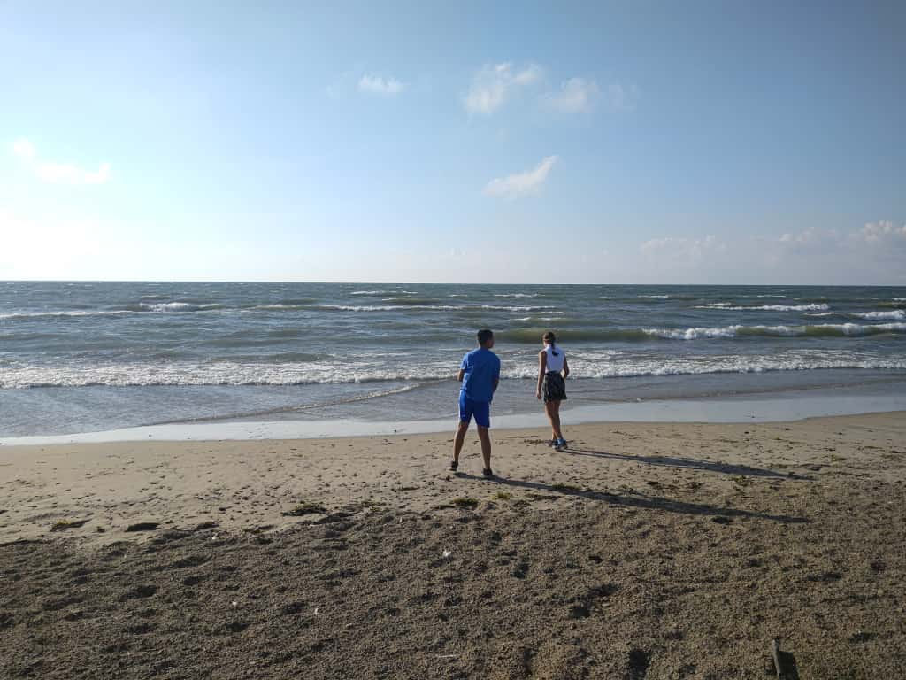

-
My Productivity Tool - A Text File
As a bit of a productivity junkie who's overwhelmed right now, the simplicity of this is appealing to me. -
This Webpage is Designed to Last
Here is an interesting article about what it takes to have a lasting website. Great food for thought to see what I can incorporate for myself... -
Website Best Practices - Opinion Piece
Highlights some of the things I hope to do. And a million other little things I never really thought of. -
One thing I had to tackle for this weblog thing is how I can upload photos. Saving them inline as a base64 encoded image would quickly make the site blow up in size and there would be no way for the browser to cache them. So I decided that saving them in an image directory on GitHub would be best for now. The next problem I ran into was that readAsDataURL function returns a dataURL and that it isn't a valid base64 string that the Github API requires.
After failing to google out the answer I took a closer look at the string and noticed that the beginning of the dataURL was probably the problem. Here is an example of what it looks like:
data:image/jpeg;base64,/9j/4SmRRXhpZgAATU0AKgAAAAgADAEAAAMAAAABD8A...So I tried a simple trick to remove the data:image/jpeg;base64 portion and send the rest of the string over the GitHub api.
let reader = new FileReader(); reader.onload = function(e) { let dataURL = e.target.result; let validBase64Image = dataURL.split(',')[1]; }; reader.readAsDataURL(file);It worked! Now I'm one set closer to having image uploads on my weblog.
-
I love discovering new tips and tricks, or in some cases old ones, that I can start using. The first one is using the datalist tag in HTML5 to give a filterable dropdown hint to an input box. No JavaScript needed.
<input type='text' list='planets' autocomplete='off' /> <datalist id='planets'> <option value='Mercury'> <option value='Venus'> <option value='Earth'> <option value='Mars'> <option value='Jupiter'> <option value='Saturn'> <option value='Uranus'> <option value='Neptune'> </datalist>The next one was the meter and progress tags
<meter value='2' min='0' max='10'>2 out of 10</meter> <progress value='63' max='100'></progress>Now I just need an excuse to try them out 😁
-
 Yep, Lake Erie is pretty big. The kids loved it.
Yep, Lake Erie is pretty big. The kids loved it.
-
 Birthdays. It doesn't feel like my son should be twelve already but here we are. It was a wonderful dinner with family and my sister made the perfect cake for my son. I mean look at it. It's fantastic! -
Static Site Generators Are Easy to Use, Right?
The biggest drawback, for me, that ultimately made me abandon my svelte site generator for this new website/weblog/thing I'm making is that it wasn't fast to get my content up live. It involved saving a markdown file, getting that file up on Gitlab and then waiting for vercel to detect the changes and update the site. And if I wasn't at home on my computer that had easy access to my passwords, well... another layer to deal with. -
Today at work I needed to grab some legacy data from the old database and move it over to the one I was running locally for some development work and testing. It's been awhile, five/six years at least, since I wrote some code to execute a sql command in c# without using an ORM. Google didn't fail, so much as frustrate me. Way too many ads and long winded blog posts to slog through.
That's part of the reason I'm making this site/blog/thing. So that in a couple years when I say "Hey, how did I pull that off again?" I can simply browse my knowledge repo and get the answer.
So here it is, a basic way to query out some data in SQL Server from c#.
SqlConnection conn = new SqlConnection("ConnectionString"); string query = "SELECT * FROM Table"; try { conn.Open(); SqlCommand command = new SqlCommand(query, conn); SqlDataReader dataReader = command.ExecuteReader(); while (dataReader.Read()) { //use dataReader.GetValue(index) to get the object } } finally { conn.Close(); } -
Did you know you could reverse the order of items in an <ol> tag? I spent way too much time writing out a function that would number the items in JavaScript. Doh! But I do love the feeling of pulling out a bunch of code and replacing it with a one liner.
<ol reversed> <li>Red</li> <li>Yellow</li> <li>Blue</li> </ol>Will display as:
3. Red 2. Yellow 1. BlueCheck out the documentation here: https://developer.mozilla.org/en-US/docs/Web/HTML/Element/ol

{kind=link}